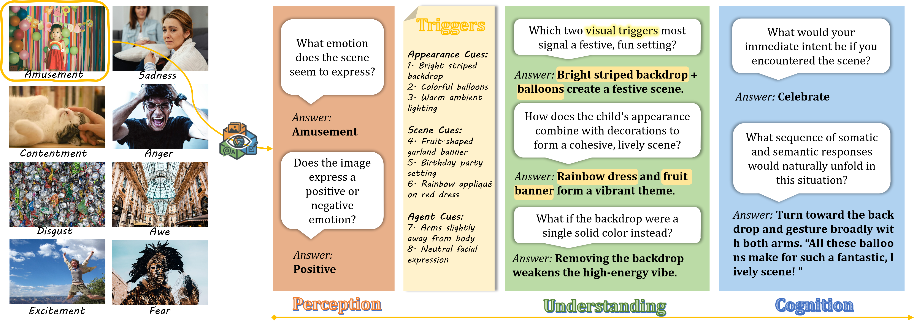
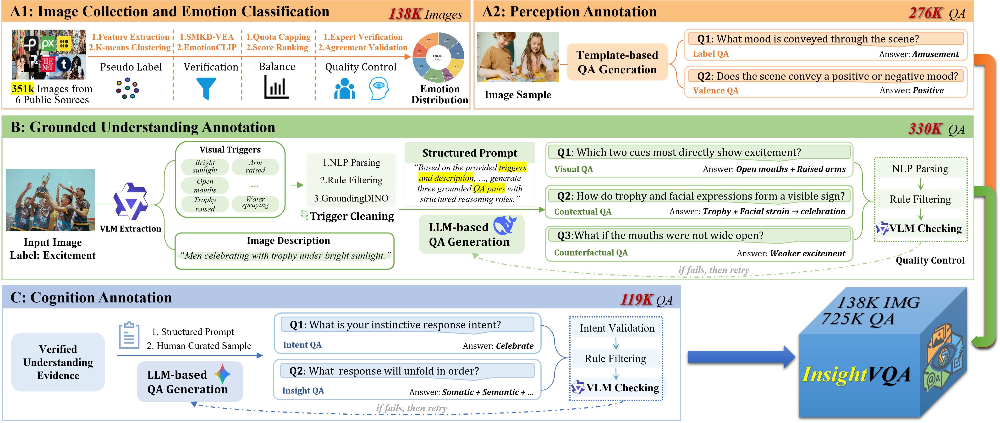
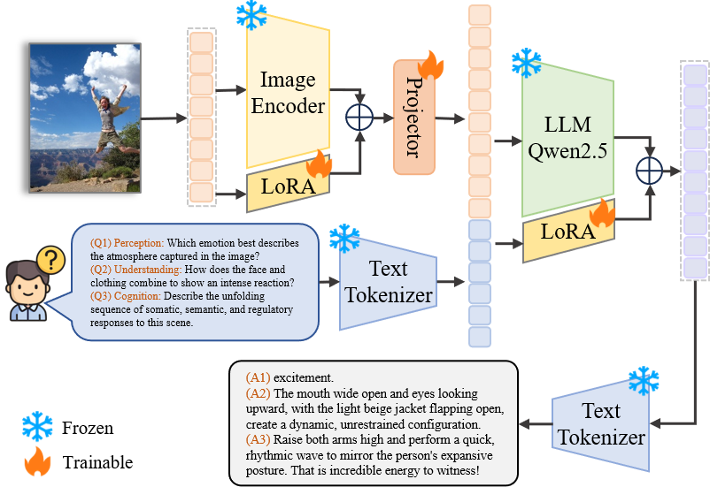

InsightVQA: High-Dimensional Emotion-Cognitive Visual Question Answering Benchmark InsightVQA: High-Dimensional Emotion-Cognitive Visual Question Answering Benchmark
Shiyu Wang, Ziyu Liu, Chaoyi Yu, Yujie Yin, Zhongqian Mao, Jing Chen, Jiaqi Song, Yunshi Lan, Yan Wang
East China Normal University

Figure 1: Overview of InsightVQA. The proposed task decomposes multimodal emotional reasoning into three stages: Perception for recognizing emotion and valence, Understanding for grounding emotional triggers and Cognition for predicting response intent and performing sequential insight reasoning.
Abstract
Visual emotion understanding requires models not only to recognize emotional states, but also to why they arise and perform higher-level cognitive reasoning. However, existing benchmarks mainly focus on emotion recognition, offering limited support for grounded understanding and response-oriented analysis. To address this gap, we introduce InsightVQA, a large-scale dataset for hierarchical visual question answering on emotion understanding and cognitive reasoning. Building from 351K images collected from six public sources, we apply a rigorous multi-stage filtering pipeline to curate 138K high-confidence images. Each image is annotated at three hierarchical levels: perception QA for emotion and valence recognition, grounded understanding QA constructed from visual trigger extraction through constraint-guided generation, and cognition QA centered on response intent prediction and sequential insight reasoning. We further present InsightVQA-Bench, a high-quality evaluation benchmark comprising 30K samples for fine-grained evaluation. To support evaluation, we introduce InsightNet, an emotion-tuned baseline for MLLMs. Results demonstrate that InsightVQA poses significant challenges for grounded emotion understanding and reasoning.
InsightVQA Dataset Pipeline

Figure 2: InsightVQA dataset construction pipeline. The pipeline comprises three stages: (A1) Image collection and emotion classification from 351K images across six public sources, producing 138K balanced samples; (A2) Perception annotation via template-based QA generation, yielding 276K label and valence QA pairs; (B) Grounded understanding annotation using VLM-extracted visual triggers and LLM-based QA generation, producing 330K visual, contextual, and counterfactual QA pairs. (C) Cognition annotation generates 119K intent and insight QA pairs via structured prompts and human curated samples, with quality controlled by rule filtering and VLM checking throughout. The final InsightVQA dataset comprises 138K images and 725K QA pairs.
Methods: InsightNet

Built upon the InsightVQA dataset, we propose InsightNet, a unified architecture for human state understanding. To instill foundational reasoning capabilities, we perform LoRA-based fine-tuning on InsightVQA, enabling the model to capture hierarchical perception, comprehension, and cognition for high-dimensional cognitive–affective representations.
To enhance both cognitive depth and generalization in complex emotional scenarios, we further apply instruction-driven supervised fine-tuning (SFT) on Qwen2.5-VL-7B using the InsightVQA dataset. As full-parameter fine-tuning is prone to overfitting on emotionally biased data, we adopt LoRA as an implicit regularization mechanism, reducing trainable parameters via low-rank decomposition.
Experiments
Comparison of model performance across Perception, Understanding, and Cognition tasks.
| Model | Year | Perception | Understanding | Cognition | ||||
|---|---|---|---|---|---|---|---|---|
| ACC | F1 | Precision | Recall | Ranking | Top-1 | ACC | ||
| Open-source MLLMs | ||||||||
| Qwen2.5-VL-7B | 2025 | 57.95 | 88.24 | 87.74 | 88.80 | 34.95 | 51.27 | 30.92 |
| LLaVA-OneVision-1.5-8B | 2025 | 56.74 | 87.81 | 88.60 | 87.07 | 60.84 | 67.50 | 45.97 |
| InternVL3.5-8B | 2025 | 53.40 | 88.54 | 88.53 | 88.60 | 31.81 | 43.44 | 31.18 |
| Deepseek-VL-7B-chat | 2024 | 52.54 | 87.25 | 88.42 | 86.12 | 40.52 | 43.48 | 38.07 |
| Qwen2.5-VL-32B | 2025 | 52.80 | 88.04 | 87.90 | 88.19 | 69.24 | 65.32 | 44.02 |
| Qwen2.5-VL-72B | 2025 | 53.83 | 88.86 | 88.13 | 89.62 | 76.30 | 56.83 | 57.24 |
| Close-source MLLMs | ||||||||
| Qwen3-Max | 2026 | 52.64 | 87.73 | 86.96 | 88.53 | 75.65 | 61.14 | 42.51 |
| Deepseek-V3.2 | 2025 | 51.20 | 87.86 | 87.23 | 88.53 | 80.24 | 65.77 | 41.60 |
| GPT-4o | 2024 | 50.63 | 88.34 | 88.49 | 88.24 | 77.51 | 61.06 | 50.34 |
| Gemini-2.5-flash | 2025 | 56.83 | 89.05 | 88.02 | 90.13 | 80.56 | 63.51 | 56.08 |
| Claude-3.7-sonnet | 2026 | 56.37 | 88.72 | 89.16 | 88.31 | 81.77 | 63.49 | 61.87 |
| Emotion-Oriented MLLMs | ||||||||
| EmoViT | 2024 | 53.69 | 84.50 | 84.85 | 84.19 | - | 12.53 | 42.86 |
| Emotion-Qwen | 2025 | 52.98 | 86.92 | 86.37 | 87.48 | - | 33.61 | 30.18 |
| EmoCaliber | 2025 | 40.29 | 84.23 | 81.52 | 87.18 | - | 25.47 | 27.92 |
| InsightNet (Ours) | 2026 | 76.25 | 90.56 | 90.50 | 90.63 | 82.79 | 71.21 | 69.18 |
"-" indicates that the model is not applicable to the evaluation.
BibTeX
If you find InsightVQA useful in your research, please consider citing:
@article{wang2026insightvqa,
title = {InsightVQA: High-Dimensional Emotion-Cognitive Visual Question Answering Benchmark},
author = {Wang, Shiyu and Liu, Ziyu and Yu, Chaoyi and Yin, Yujie and Mao, Zhongqian and Chen, Jing and Song, Jiaqi and Lan, Yunshi and Wang, Yan},
journal = {arXiv preprint arXiv:XXXX.XXXXX},
year = {2026}
}